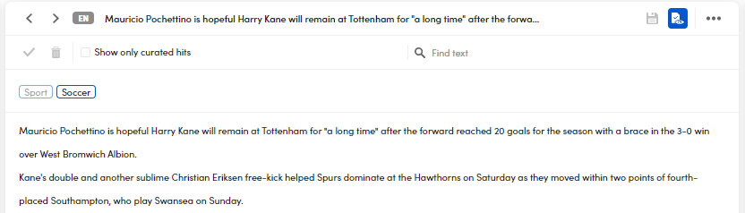

Results curation
Introduction
Results curation means eliminating noise and imperfections from selected output documents when you need a sample of results indicative of the expected output.
When you cure an output document you decide which results—categories, extractions or both—to keep.
Unless a workflow ends with a test operator, the output documents of API call and interactive tests are stored in a cache.
Cached output documents can be curated in the Curation tab, where you can examine and modify the results, then download curated documents.
You can confirm correct results and remove wrong results, but it is not possible to change or add results.
Info
The results you remove are always omitted in the curated output document. The other results are present by default, unless you choose to show only curated hits. In that case the curated output document contains only the confirmed results.
In the Curation tab you have:
- The list of cached output documents on the left
- The text of the current document with possible categories in the central panel
- Three tabs, Classes, Entities and Tokens, on the right panel, showing extractions, named entities and detected tokens respectively.
Curable and non curable documents
To be curable, an output document must at least have a text and results in a pre-defined format. Non curable documents are marked with a prohibition sign in the documents list.
Select a document
To select a document, pick it from the list on the left or use Next document and Previous document to browse the list from the central panel.
Find text
Enter at least three characters in the Find text field in the central panel to find and highlight all occurrences of a string in the text of the document.
To clear your search select the X button on the right of the field.
Copy document text to the clipboard
To copy a document text to the clipboard, select the ellipsis in the central panel, then select Copy to clipboard.
Filter documents
Filter documents by name
To filter documents by name, enter at least three characters of the document name in the Filter by document name field above the list and press Enter.
To cancel the filter, select the X button on the right of the field.
Filter documents by language
To filter documents by language, select the language from the language drop-down menu above the document list.
Filter documents by curation
To filter documents by curation, select between the available options from the first drop-down menu from the left above the documents list.
.
Note
The Curated documents option corresponds to documents that have been marked as curated. Those are indicated with a checkmark in the documents list. See below how to turn on and off the curation mark.
Sort documents
To sort the list of documents, choose one of the options from the drop-down list in the upper right corner of the panel.
Cure categories
The categories of a document are listed above the document text in the central panel.
Info
Curation controls are disabled when curation mode is turned on.
Remove categories
To remove a category, select it then select Remove on the pop-up menu.
To undo removal, select a removed category then select Remove again.
To remove all categories, select Remove all .
When curation mode is turned off, removed categories are visible and have a red marker on the right .
Confirm categories
To confirm a category, select it then select Confirm on the pop-up menu.
To undo confirmation, select a confirmed category, then select Confirm again.
To confirm all categories, select Confirm all .
Confirmed categories are displayed with a green marker on the right .
Cure extractions
Extractions are listed in the Classes tab of the right panel.
Info
Curation controls are disabled when curation mode is turned on.
Filter extractions
To filter extractions, enter at least three characters in the Filter list inside the Classes tab on the right panel and press Enter. Only the extractions whose value contains your search criteria will be shown.
To cancel the filter, select the X button at the right of the field.
Sort extractions
To sort extractions, select one of options from the drop-down list in the upper left corner corner of the Classes tab on the right panel.
Remove extractions
To remove individual occurrence of extractions:
- Select one or more extractions in the Classes tab on the right panel: all the occurrences of the selected extractions are highlighted in the document text.
- Select the occurrence you want to confirm in the text, then select Remove on the pop-up menu.
To undo removal, select a confirmed occurrence, then select Remove again on the pop-up menu.
To remove all the occurrences of one or more extractions:
- Select one or more extractions in the Classes tab on the right panel.
- Select Remove selected items in the upper right corner of the tab.
When curation mode is turned off, removed occurrences are visible in the text and have a red marker on their right.
The total number of removed occurrences for an extraction appears inside a red box in the corresponding entry inside the Classes tab on the right panel.
Confirm extractions
To confirm individual occurrences of extractions:
- Select one or more extractions in the Classes tab on the right panel: all the occurrences of the selected extractions are highlighted in the document text.
- Select the occurrence you want to confirm in the text, then select Confirm on the pop-up menu.
To undo confirmation, select a confirmed occurrence, then select Confirm again on the pop-up menu.
To confirm all the occurrences of one or more extractions:
- Select one or more extractions in the Classes tab on the right panel.
- Select Confirm selected items in the upper right corner of the tab.
Confirmed occurrences in the text have a green marker on their right.
The total number of confirmed occurrences for an extraction appears inside a green box in the corresponding entry inside the Classes tab on the right panel.
Save changes
When there are pending changes you see a notification above the document.
.
To save changes, select Save .
Warning
Changes get lost if you refresh the page before saving them.
Curation mode
Curation mode shows the effects of curation, it's a preview of the final results.
In curation mode, curation controls are disabled.
When curation mode is turned off—the default—all the original results are visible and counted, but cured results have markers, red for removed and green for confirmed.
When curation mode is turned on:
- Removed results are not shown.
- Confirmed results are always shown.
- Results that have neither been removed nor confirmed may appear or not based on a visualization option.
- Removal/confirmation markers are not displayed and occurrences counts reflect the number of visible results.
To turn curation mode on and off, select Toggle curation mode on the central panel.
For example, the picture below shows the curation of extractions when curation mode is turned off.
You can see the extraction cheese occurring four times in the text: one occurrence is confirmed (green marker), one has been removed (red marker) and the other two have not been touched (no marker).
This is what happens when curation mode is turned on:
The removed occurrence of cheese is neither highlighted nor counted anymore, meaning it will not be included in the output. The confirmed occurrence is visible and counted, while the other two are visible and counted too, but they are grayed out.
When in curation mode, the Show only curated hits visualization option affects the visibility of original, untouched results.
By default the option is not activated, meaning that untouched results are visibile—even if grayed out—and will be included in the output.
When the option is activated, original untouched results are not shown anymore and they will not be included in the output. Since removed results are never included in the output, the effect of the activation of the Show only curated hits option is that the output is composed only of confirmed results, if any.
To continue with the previous example, here is what happens when Show only curated hits is activated while in curation mode:
Thers's only occurence of extraction cheese left and counted, untouched occurrences disappeared.
Curation mode and the Show only curated hits option affect categories in the same way.
Let's see an example:
In the picture above, curation mode is turned off. You see two categories, Soccer and Sport, the former confirmed, the latter untouched.
This is what happens when curation mode is turned on:

The untouched category is still visible, but it's grayed out.
The following picture shows the effect of the activation of Show only curated hits:
Only the confirmed category is left.
Here's another example with a confirmed category and a removed one.
In the picture above, curation mode is off, so you can see both categories with their curation markers.
Here's what happens when you turn on curation mode:
The removed category is not shown anymore. Nothing will change when activating Show only curated hits, since there are no untouched results.
Entities and tokens
Entities and tokens are part of the results, but they cannot be curated.
Highlight entities
To highlight specific entities in the text:
- Select the Entities tab on the right panel.
- Expand an entity type.
- Select the entity. Multiple selection is allowed.
To highlight all the entities of a given type in the text, select the Entities tab on the right panel, then select the entity type.
Filter entities
To filter entities, enter at least three characters in the Filter list inside the Entities tab on the right panel and press Enter. Only the entities whose name contains your search criteria will be shown.
To cancel the filter, select the X button at the right of the field.
Sort entities
To sort entities, select one of the options from the drop-down list in the upper left corner corner of the Entities tab on the right panel.
Highlight tokens
To highlight specific tokens in the text:
- Select the Tokens tab on the right panel.
- Expand a token type.
- Select the token. Multiple selection is allowed.
Filter tokens
To filter tokens, enter at least three characters in the Filter list inside the Tokens tab on the right panel and press Enter. Only the tokens matching your search criteria will be shown.
To cancel the filter, select the X button at the right of the field.
Sort tokens
To sort tokens, select one of the options from the drop-down list in the upper left corner corner of the Tokens tab on the right panel.
Mark a document as curated
To help you recognize the documents you have finished curating, you can mark them. The curation marker is displayed beside the document in the documents list.
To turn the curation marker on and off, select Mark this document as curated or Mark this document as not curated below the document text.
Download document
To download a curable document, select the ellipsis above the document, then select Download document. In the dialog box, if you choose Curated document or Both versions of the document, the Show only curated hits checkbox will appear. If you select it, the curated document will contain only confirmed results, otherwise it will contain all the results except those removed. The effect of this option is the the same you can experiment in curation mode.
To download a non curable document, pick it from the list on the left and select Download document on the central panel.
Delete a document
To delete a curable document from the cache, select the ellipsis in the central panel, then select Delete document.
To delete a non curable document, pick it from the list on the left and select Delete document on the central panel.